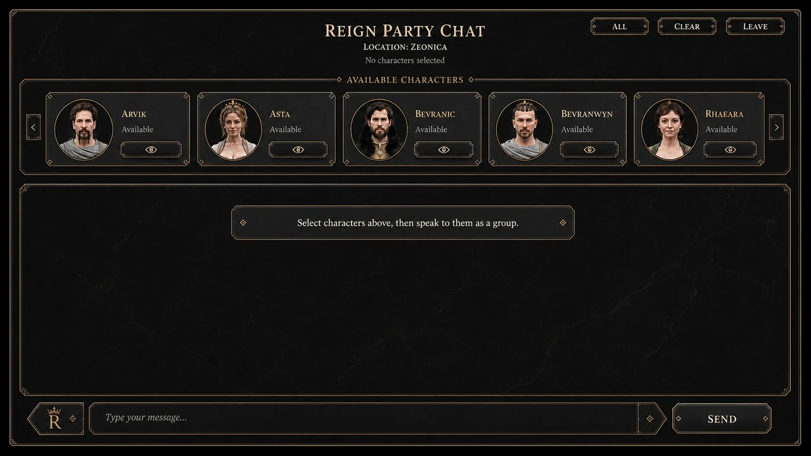
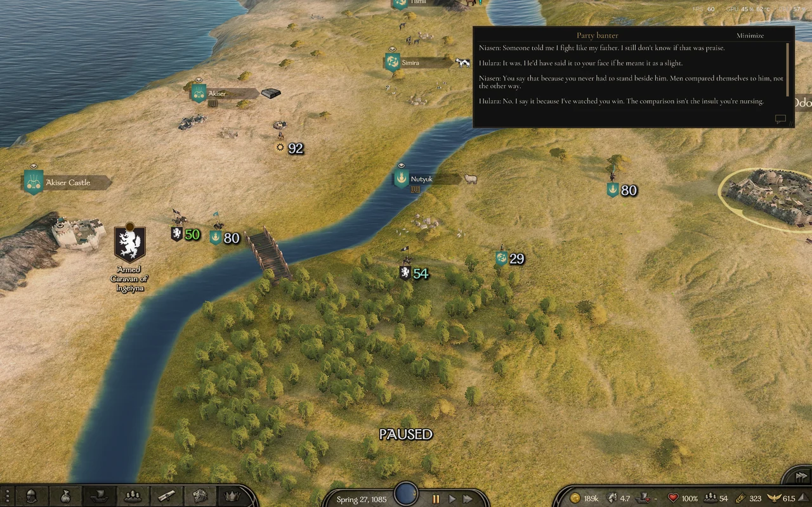
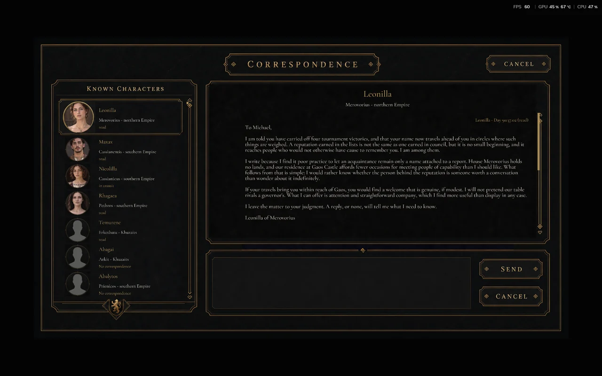

Group chat, letters, and everyday communication
Talk to your party, exchange letters, and keep in touch across the campaign.
Party Chat and private audiences
Preview included#Press backslash (\) or use MCM → Utilities → Open Party Chat, select the people you want, then send your contribution to that audience. Enter or Numpad Enter sends a ready contribution. Alt+A opens the action builder for eligible selected participants. Escape closes an open image/portrait layer first or leaves Party Chat. All selects the available group and Clear clears selection. Eligible people depend on your party and safe location; availability is not permission to speak to someone across the world.
Replies come from individuals, and later speakers can respond to earlier contributions. Each person speaks for themselves. Supported private or whisper conversations have a narrower audience than the whole group. Check the selected recipients before sharing something sensitive; merely being listed in a directory should not make someone a participant in a private Homes conversation.
Changing a group can create a different conversation context. Where Continue is available, it resumes a retained group only when the original members and location are still eligible. A remembered transcript is not proof that an absent person has returned.

Travel banter
Preview included#Named adults actually traveling in your main party may talk among themselves in a small map window. Waiting in place does not start travel banter. Prisoners are not conversational party members for this feature.
You can move the window by its title bar, resize it with the corner grip, and minimize it. Its dialogue control lets you join the selected speakers in Party Chat. Joining continues the exchange instead of asking the AI to invent a second opening. If the original speakers are unavailable, an old transcript may remain readable without becoming a live conversation.
Window position and size are local interface preferences. They are separate from your campaign's memories and relationships.

Here Niasen and Hularan are talking while accompanying the party. Scroll within the panel to read more of the exchange. The map happens to be paused in this picture; the banter window does not itself control campaign time.
Correspondence: sending and receiving letters
Preview included#Press Ctrl+M from a suitable campaign-map screen, or use MCM → Utilities → Open Correspondence. Choose a known living contact, read the thread, and write your message. Enter or Numpad Enter sends a ready letter; Escape closes the screen. Alt+A opens the action builder for an eligible selected correspondent when it is not busy.
The shortcut may wait for a suitable screen; do not expect it to open over a battle, inventory, native conversation, save/load dialog, or another blocking interface. The list can also surface commanders who send order reports. A sent letter first travels, then arrives, then can be marked read. A reply has its own journey.
Letters are faster in the revised system than in older editions, but they are not instant long-distance chat. Nearby letters arrive sooner than distant ones. Delivery-time and unsolicited-letter frequency adjustments live in the Control Center's Options. Changes affect future dispatches rather than rewriting a letter already in transit.
Characters can write first, including an eligible introduction. You do not have to start every relationship by finding its owner in a keep. An introduction is delivered before the new correspondent becomes an ordinary contact. As your reputation grows, people from other houses may reach out and invite you to become acquainted. In the screenshot below, Leonilla mentions Michael’s tournament successes before welcoming a visit. Treat the invitation as an opening to meet or reply, rather than a guaranteed alliance or romance.

An arranged marriage proposal can arrive as a signed letter. Open View marriage offer on the sender's thread to inspect or respond. See Arranged marriage offers and cultural weddings for the choices and deadline.
Promises to inform someone or send for them
Preview included#An NPC's clear promise to inform another named person can become a real message. While the conversation is still open, the promise can be corrected or withdrawn. Explicitly closing the conversation releases accepted outgoing commitments; a temporary screen handoff is not the same as finishing the talk.
The recipient learns the delivered message, not everything you privately discussed. Asking an NPC to pass on an offer does not make the recipient accept it. A question needs a real answer and return delivery. A summons is an invitation that can be refused; acceptance still needs a safe location, travel, and an agreed stay.
For a direct subordinate meeting, state the person, place, purpose, and length of stay. Keep the distinction between waiting for arrival and time spent together after arrival. A promised arrival is not evidence that the NPC is already present.
Use Alt+A in the ready individual or group conversation to find the supported meeting action and review its terms.
Party announcements
Preview included#Use Announce for a statement intended for your actual traveling party. It records what eligible party members heard without generating an immediate round of group replies. It does not address every person in the settlement, every member of your clan, or another party in your army.
People who heard it may react individually when you later approach them. An announcement such as “We leave for the coast tomorrow” is remembered speech, not an order that moves the main party or creates an agreement. Use the action builder for a mechanical commitment.
The action builder shortcut is Alt+A. Announce itself is the labeled screen control; it is different from the normal Enter send action.